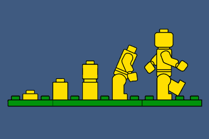

À la rencontre de Git
Git est un système de contrôle de versions gratuit et open source. C'est un outil permettant de suivre l'historique d'un projet tout au long de sa vie.

Git garde trace des instantanés d'un espace de travail (communément appelé dépôt ou repository en anglais) permettant de retracer les étapes une à une au besoin.
Git permet à tous les membres d'une équipe de travailler en parallèle dans le même dépôt tout en se gardant à jour les uns avec les autres.
Git est un système de contrôle de versions décentralisé. Contrairement à d'autres outils (par exemple subversion ou même Google Docs -qui n'est toutefois pas un système de contrôle de versions), tous les changements réalisés dans un dépôt se font localement sur le poste de travail d'une personne et non sur un serveur central. Il est donc possible de travailler sans connexion à Internet.
De plus, Git permet de garder la trace des différentes versions d'un projet sans qu'aucune coordination entre les membres de l'équipe ne soit nécessaire.
Exercices
- Installer Git
- Quelle version avez-vous installé ?
- Quelle commande avez-vous dû exécuter dans votre terminal pour trouver cette version ?
- Configurer Git pour qu'il vous reconnaisse (courriel et nom)
- Quelle commande avez-vous dû exécuter dans votre terminal pour connaître quel courriel vous est associé dans Git ? Même question mais concernant le nom qui vous est associé ?
- Quelle commande avez-vous dû exécuter dans votre terminal pour mettre à jour le courriel qui vous est associé dans Git ? Même question mais concernant le nom qui vous est associé ?